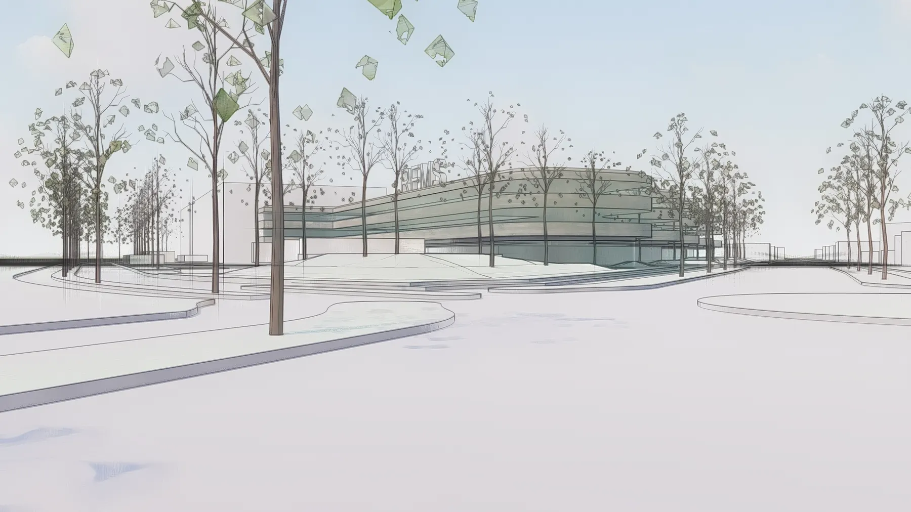

REMS GmbH & Co. KG, Waiblingen
Nachhaltige Architektur für die Zukunft: Brückner Architekten gestalten das REMS GmbH & Co. KG Gebäude in Waiblingen.
Nachhaltige Architektur für die Zukunft: Brückner Architekten gestalten das REMS GmbH & Co. KG Gebäude in Waiblingen.
Wir freuen uns sehr über unser neues Projekt in Waiblingen-Hegnach! Für die REMS GmbH & Co KG entwickeln wir ein zukunftsweisendes Werk, das Tradition, Standorttreue und Vision baulich miteinander verbindet.
Der Entwurf greift auf der Stirnseite – hin zur Straße – eine fließende Wellenform auf. Sie steht sinnbildlich für Bewegung, Dynamik und Kontinuität. Wer künftig am Gebäude entlangfährt, erlebt eine architektonische Geste, die das Auge sanft begleitet. Das neue Werk tritt so bereits im Vorübergehen mit seiner Umgebung in Dialog.
In einer Ära, in der die Anforderungen an Gebäude weit über das Funktionale hinausgehen, steht die Architektur vor der Herausforderung, innovative Wege zu finden. Das REMS GMBH & Co KG Gebäude in Waiblingen wird nicht nur den aktuellen Bedürfnissen gerecht, sondern setzt auch einen Meilenstein in puncto ökologischer, sozialer und ökonomischer Nachhaltigkeit.
Competition
Energieeffiziente Bauweisen
Das REMS GmbH & Co. KG Gebäude wird auf energieeffiziente Bauweisen und Technologien setzen. Passive Solararchitektur, die Nutzung erneuerbarer Energien wie Sonnenenergie und Geothermie sowie der Einsatz von Wärmedämmmaterialien werden den Energieverbrauch minimieren und die Lebenszykluskosten senken.
Verwurzelt vor Ort
Im Sockelbereich verankert sich das Gebäude mit Materialien aus der Region – ein Zeichen der Bodenständigkeit und Verbundenheit mit den Menschen vor Ort. Das Unternehmen, das seit 1909 am Standort produziert, setzt mit dem Neubau ein sichtbares Bekenntnis zu Waiblingen – und zum nachhaltigen Wachstum.
Blick in die Zukunft
Nach oben hin wandelt sich das Gebäude. Technisch wirkende Fassadenflächen mit visionärer Anmutung scheinen mit dem Himmel zu verschmelzen – vielleicht auch als architektonische Metapher für den Weitblick und die Innovationskraft von REMS.
Die Fassade ist im Entwurf offen gedacht: Ansätze wie eine grafische Überlagerung mit Waldrändern könnten helfen, die Volumina subtil in die Landschaft einzubetten und zugleich den nachhaltigen Anspruch des Unternehmens sichtbar zu machen.
Nachhaltigkeit als gestaltungsprinzip
Grundlegende Strategien für „Green Building“
Eine Schlüsselstrategie beim Bau des REMS GmbH & Co. KG Gebäudes ist die Auswahl umweltverträglicher Materialien mit geringem Ressourcenverbrauch. Recyclingfähigkeit, lokale Verfügbarkeit und minimale Umweltbelastung sind dabei zentral. Recycelte Materialien nach dem Cradle-to-Cradle-Prinzip und andere ökologisch verträgliche Baustoffe werden eingesetzt, um den ökologischen Fußabdruck zu reduzieren und eine Kreislaufwirtschaft zu fördern.

Nachhaltigkeit als Gestaltungsprinzip: Brückner Architekten München legt besonderen Wert auf Nachhaltigkeit bei der Gestaltung. Durch frühzeitige Beratung werden Aluminium, Blech und Fassadenbegrünung, Regenwassermanagement und Geothermie aktiv in die Entwurfsphase integriert. Der Entwurf für das REMS GmbH & Co. KG Gebäude sieht die Minimierung versiegelter Flächen und eine intensive Begrünung im Außenbereich vor. Diese kompakte Bauweise fördert Effizienz, reduziert den Flächenverbrauch und minimiert Infrastrukturkosten.
Holistisches und Interdisziplinäres Herangehen: Nachhaltiges Bauen erfordert ein holistisches und interdisziplinäres Herangehen, das ökologische, ökonomische und soziale Aspekte gleichermaßen berücksichtigt. Das Ziel ist es, Gebäude zu schaffen, die nicht nur den Bedürfnissen der Gegenwart entsprechen, sondern auch den Herausforderungen der Zukunft gewachsen sind.
aUFTRAGGEBER: REMS GMBH & Co KG
Das REMS Gebäude in Waiblingen verkörpert nicht nur zeitgemäße Architektur, sondern auch das Engagement für eine nachhaltige Zukunft. Die markante Wellenform an der Stirnseite steht sinnbildlich für Dynamik und Kontinuität – ein gestalterisches Leitmotiv, das sich im gesamten Entwurf widerspiegelt. Durch die Verbindung von Ästhetik, Effizienz und ökologischer Verantwortung setzt dieses Projekt Maßstäbe für die Baubranche und geht als Vorreiter einer innovativen und nachhaltigen Architektur in die Zukunft.
Wir haben ihr Interesse geweckt? Sie haben Fragen oder wollen einen Termin mit uns vereinbaren? Dann hinterlassen Sie uns bitte eine Nachricht.
Wenn Sie uns eine Nachricht per Kontaktformular senden, so erheben, speichern und verarbeiten wir Ihre Daten nur, soweit dies für die Abwicklung Ihrer Anfragen und für die Korrespondenz mit Ihnen erforderlich ist. Hier finden Sie unsere Datenschutzerklärung.
Hinweis: Leider können wir aufgrund aktueller betrieblicher Umstände derzeit keine Schülerpraktika anbieten. Wir hoffen auf Ihr Verständnis und stehen für zukünftige Möglichkeiten gerne zur Verfügung. Vielen Dank.
Brückner Architekten GmbH Gabriel-Max-Straße 4 81545 München
BRÜCKNERINNEN Interior
REON Realisierung
PROPERTYMAX Maximales Baurecht
TGA Süddeutschland GmbH
Rendeffect GmbH
Wir haben Ihr Interesse geweckt?
Sie haben Fragen oder wollen einen Termin mit uns vereinbaren?